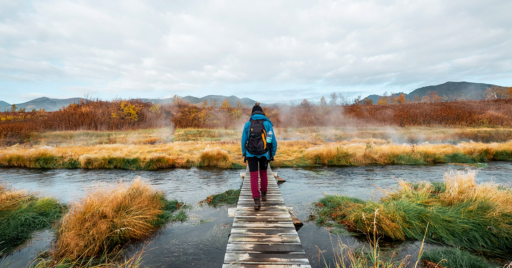

Assistir à palestra no YouTube ↗A Ponte da Conexão Interior: Rompendo as Barreiras do Eu
Vivemos ilhados em nós mesmos, cercados por nossos conceitos, pensamentos e visão de mundo, acreditando que essa é a melhor forma de nos proteger. No entanto, essa falsa sensação de segurança nos aprisiona em uma realidade autoconstruída, limitando nossa compreensão da vida e nos afastando da amplitude de experiências que ela pode oferecer.
A Vida como uma Ponte de Experiências
A vida é como uma ponte que conecta as várias experiências pelas quais passamos. Para enxergar sua verdadeira essência, precisamos caminhar sobre ela, atravessando diferentes estados de vida. Para isso, é necessário nos prepararmos para um estado de vida líquido, com uma nova consciência que nos permita transcender os condicionamentos que nos cercam.
A Travessia do Renascimento Espiritual
O impulso da busca espiritual nos leva a um renascimento interior, um processo de autoconhecimento profundo, discernimento transcendente e desapego das estruturas limitantes que construímos em nós mesmos. Essa jornada tríplice é essencial para construirmos uma ponte interior que nos conecte a uma nova realidade.
A Bússola do Anseio Profundo
Nesse processo de construção da ponte interior, a bússola que nos guia é o anseio profundo de desvendar o mistério fundamental da vida. Quem somos, de onde viemos e para onde vamos são questões que nos impulsionam a buscar respostas e a se conectar com uma realidade mais elevada.
A Conexão com a Vida Divina
Ao atravessarmos a ponte interior, descobrimos que somos mais do que nossa visão limitada de mundo. Conectamo-nos com uma nova realidade, sentindo-nos fortalecidos para enfrentar os desafios da vida com sabedoria e compreensão. A vida divina que buscamos está ao alcance, esperando por nós além das barreiras que construímos.
A Alquimia da Transformação Interior
Essa jornada interior é uma verdadeira alquimia, transformando nossos medos em coragem, nossas dúvidas em certezas e nossas limitações em possibilidades. À medida que nos abrimos para essa travessia, permitindo que a ponte da conexão interior seja construída, descobrimos a força e a essência divina que habitam em cada um de nós.
A Busca Sem Fim
Essa busca pelo autoconhecimento e transcendência é uma jornada sem fim. À medida que avançamos nesse caminho, percebemos que a construção da ponte interior não é um destino final, mas sim um processo contínuo de crescimento e evolução. A cada passo dado, novos horizontes se abrem, e nossa conexão com a vida divina se aprofunda.
A Coragem de Atravessar
Para atravessar a ponte interior e alcançar a vida divina, precisamos de coragem para enfrentar nossos medos e inseguranças, para deixar para trás os apegos que nos prendem ao passado e para abrir-nos para a grandiosidade do desconhecido. Atravessar essa ponte é um ato de fé e confiança em nosso poder interior.
A Jornada de Toda uma Vida
A construção da ponte interior é uma jornada de toda uma vida. É um compromisso diário de autoexploração, autorreflexão e autotransformação. À medida que nos movemos nessa direção, ganhamos clareza sobre nossa verdadeira natureza e propósito, e encontramos a paz e a plenitude que tanto buscamos.
A Descoberta do Divino em Nós
Através dessa jornada, descobrimos que o divino não está distante, mas dentro de nós. Conectados com nossa essência espiritual, nos tornamos um com o universo e abraçamos nossa interconexão com toda a criação. Atravessamos a ponte interior com gratidão e humildade, reconhecendo que somos seres divinos em uma jornada humana.
Assim, a construção da ponte interior é um chamado para transcender nossas limitações autoimpostas e nos conectar com a grandiosidade da vida divina. É uma jornada de coragem, autoconhecimento e busca incessante por um estado de consciência mais elevado. E, ao atravessarmos essa ponte, encontramos a verdadeira realização do ser e a conexão com a essência mais profunda do universo.
Texto e mídia do acervo público da Rosacruz Áurea. Consultar publicação original ↗